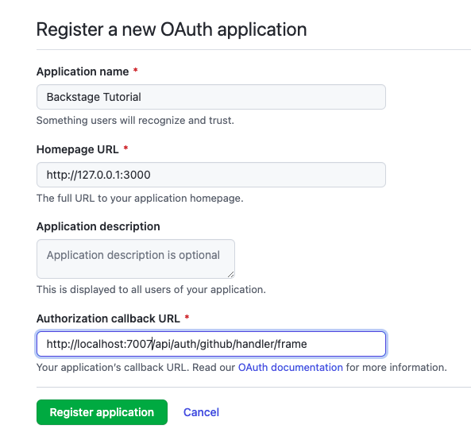
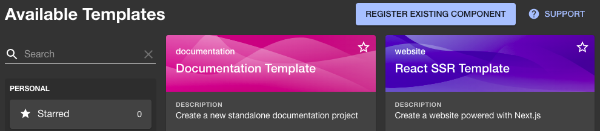
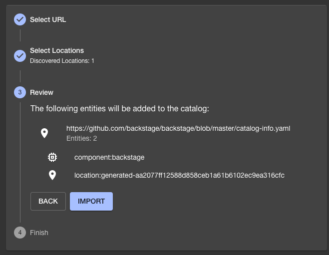
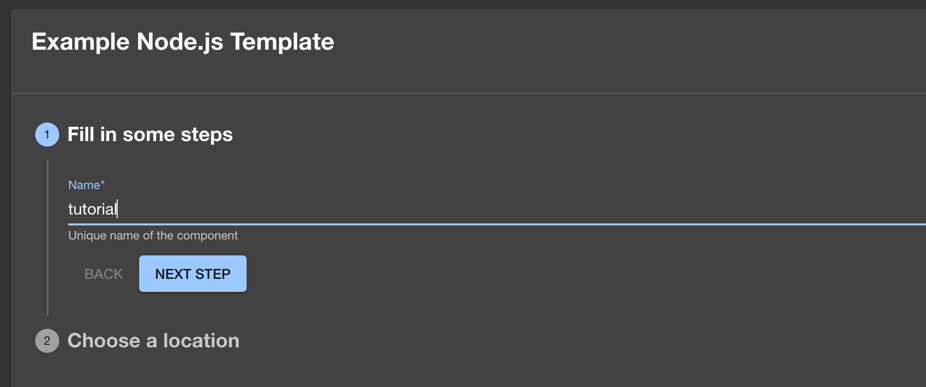
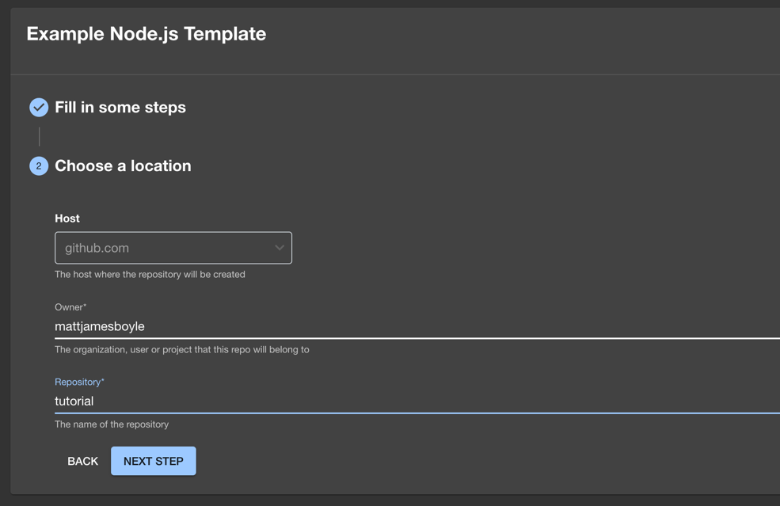

This is part two of the Getting Started documentation of Backstage. The steps in this tutorial assume you've installed Backstage app from the npm repository, like in the Getting Started guide and want to configure Backstage.
At the end of this tutorial, you can expect:
- Backstage to use a PostgreSQL database
- You'll authenticate using one of the auth providers
- The Backstage GitHub integration to be configured
- You're able to use Software Templates
Prerequisites
- Access to a Linux-based operating system, such as Linux, MacOS or Windows Subsystem for Linux
- An account with elevated rights to install prerequisites on your operating system
- If the database is not hosted on the same server as the Backstage app, the PostgreSQL port needs to be accessible (the default is 5432 or 5433)
Install and configure PostgreSQL
These instructions can be skipped if you already have a PostgreSQL server installed and created a schema and user. The example below is for Linux, but luckily there are detailed instructions on how to install PostgreSQL to help you get started.
sudo apt-get install postgresql
Test if your database is working:
sudo -u postgres psql
You should see a very welcoming message, like:
psql (12.9 (Ubuntu 12.9-0ubuntu0.20.04.1))
Type "help" for help.
postgres=#
For this tutorial we're going to use the existing postgres user. The next step is to set the password for this user:
postgres=# ALTER USER postgres PASSWORD 'secret';
That's enough database administration to get started. Type \q, followed by
pressing the enter key. Then again type exit and press enter. Next, you need
to install and configure the client.
Stop Backstage, and go to the root directory of your freshly installed Backstage App. Use the following commands to start the PostgreSQL client installation:
# From your Backstage root directory
yarn add --cwd packages/backend pg
Use your favorite editor to open app-config.yaml and add your PostgreSQL
configuration in the root directory of your Backstage app using the credentials
from the previous steps.
```yaml title="app-config.yaml"
backend:
database:
# highlight-remove-start
client: better-sqlite3
connection: ':memory:'
# highlight-remove-end
# highlight-add-start
# config options: https://node-postgres.com/apis/client
client: pg
connection:
host: ${POSTGRES_HOST}
port: ${POSTGRES_PORT}
user: ${POSTGRES_USER}
password: ${POSTGRES_PASSWORD}
# https://node-postgres.com/features/ssl
# ssl:
# host is only needed if the connection name differs from the certificate name.
# This is for example the case with CloudSQL.
# host: servername in the certificate
# ca:
# $file:
You'll use the connection details from the previous step. You can either set the
`POSTGRES_` environment variables prior to launching Backstage, or remove the
`${...}` values and set actual values in this configuration file.
The default port for PostgreSQL is `5432` or `5433`, and the host name could be
`127.0.0.1` if installed locally. A word of caution: In general, using
connection details in a configuration file is not recommended.
Start the Backstage app:
```shell
yarn dev
After Backstage is completely started you'll notice the catalog is populated with the information, still coming from the configuration files. If you add a new component, or register an existing one it will be saved in the database. Later in this tutorial you'll add a service, and you can test if it's persistent as advertised.
If you want to read more about the database configuration, here are some helpful links:
- Configuring Plugin Databases
- Read more about Knex, which is the library we use for the database backend
Setting up authentication
There are multiple authentication providers available for you to use with Backstage, feel free to follow the instructions for adding authentication.
For this tutorial we choose to use GitHub, a free service most of you might be familiar with. For other options, see the auth provider documentation.
Go to
https://github.com/settings/applications/new
to create your OAuth App. The Homepage URL should point to Backstage's
frontend, in our tutorial it would be http://localhost:3000. The
Authorization callback URL will point to the auth backend, which will most
likely be http://localhost:7007/api/auth/github/handler/frame.

Take note of the Client ID and the Client Secret. Open app-config.yaml,
and add your clientId and clientSecret to this file. It should end up
looking like this:
```yaml title="app-config.yaml" auth: # see https://backstage.io/docs/auth/ to learn about auth providers environment: development providers: github: development: clientId: YOUR CLIENT ID clientSecret: YOUR CLIENT SECRET
### Add sign-in option to the frontend
Backstage will re-read the configuration. If there's no errors, that's great! We
can continue with the last part of the configuration. The next step is needed to
change the sign-in page, this you actually need to add in the source code.
Open `packages/app/src/App.tsx` and below the last `import` line, add:
```typescript title="packages/app/src/App.tsx"
import { githubAuthApiRef } from '@backstage/core-plugin-api';
import { SignInPage } from '@backstage/core-components';
Search for const app = createApp({ in this file, and below apis, add:
```tsx title="packages/app/src/App.tsx"
components: {
SignInPage: props => (
> Note: The default Backstage app comes with a guest Sign In Resolver. This resolver makes all users share a single "guest" identity and is only intended as a minimum requirement to quickly get up and running. You can read more about how [Sign In Resolvers](../auth/identity-resolver.md#sign-in-resolvers) play a role in creating a [Backstage User Identity](../auth/identity-resolver.md#backstage-user-identity) for logged in users.
Restart Backstage from the terminal, by stopping it with `Control-C`, and starting it with `yarn dev` . You should be welcomed by a login prompt!
> Note: Sometimes the frontend starts before the backend resulting in errors on the sign in page. Wait for the backend to start and then reload Backstage to proceed.
To learn more about Authentication in Backstage, here are some docs you
could read:
- [Authentication in Backstage](../auth/)
- [Using organizational data from GitHub](../integrations/github/org.md)
### Setting up a GitHub Integration
The GitHub integration supports loading catalog entities from GitHub or GitHub
Enterprise. Entities can be added to static catalog configuration, registered
with the catalog-import plugin, or discovered from a GitHub organization. Users
and Groups can also be loaded from an organization. While using [GitHub Apps](../integrations/github/github-apps.md)
might be the best way to set up integrations, for this tutorial you'll use a
Personal Access Token.
Create your Personal Access Token by opening
[the GitHub token creation page](https://github.com/settings/tokens/new). Use a
name to identify this token and put it in the notes field. Choose a number of
days for expiration. If you have a hard time picking a number, we suggest to go
for 7 days, it's a lucky number.

Set the scope to your likings. For this tutorial, selecting `repo` and `workflow` is required as the scaffolding job in this guide configures a GitHub actions workflow for the newly created project.
For this tutorial, we will be writing the token to `app-config.local.yaml`. This file might not exist for you, so if it doesn't go ahead and create it alongside the `app-config.yaml` at the root of the project.
This file should also be excluded in `.gitignore`, to avoid accidental committing of this file.
In your `app-config.local.yaml` go ahead and add the following:
```yaml title="app-config.local.yaml"
integrations:
github:
- host: github.com
token: ghp_urtokendeinfewinfiwebfweb # this should be the token from GitHub
That's settled. This information will be leveraged by other plugins.
If you're looking for a more production way to manage this secret, then you can do the following with the token being stored in an environment variable called GITHUB_TOKEN.
yaml title="app-config.local.yaml"
integrations:
github:
- host: github.com
token: ${GITHUB_TOKEN} # this will use the environment variable GITHUB_TOKEN
Note: If you've updated the configuration for your integration, it's likely that the backend will need a restart to apply these changes. To do this, stop the running instance in your terminal with
Control-C, then start it again withyarn dev. Once the backend has restarted, retry the operation.
Some helpful links, for if you want to learn more about:
Explore what we've done so far
Login to Backstage and check profile
Open your Backstage frontend. You should see your login screen if you're not logged in yet. As soon as you've logged in, go to Settings, you'll see your profile. Hopefully you'll recognize the profile picture and name on your screen, otherwise something went terribly wrong.
Register an existing component
- Register a new component, by going to
createand chooseRegister existing component

- As URL use
https://github.com/backstage/demo/blob/master/catalog-info.yaml. This is used by our demo site.

- Hit
Analyzeand review the changes. Apply them if correct.

- You should receive a message that your entities have been added.
- If you go back to
Home, you should be able to finddemo. You should be able to click it and see the details
Create a new component using a software template
- Go to
createand choose to create a website with theExample Node.js Template - Type in a name, let's use
tutorialand clickNext Step

- You should see the following screen:

- For host, it should default to github.com
- As owner, type your GitHub username
-
For the repository name, type
tutorial. Go to the next step -
Review the details of this new service, and press
Createif you want to deploy it like this. - You can follow along with the progress, and as soon as every step is finished, you can take a look at your new service
Achievement unlocked. You've set up an installation of the core Backstage App, made it persistent, and configured it so you are now able to use software templates.
Let us know how your experience was: on discord, file issues for any feature or plugin suggestions, or bugs you have, and feel free to contribute!